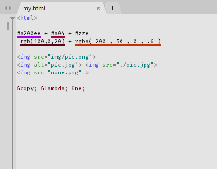

CudaText is a cross-platform text editor, written in Lazarus. Open source project.
It starts quite fast (0.5 sec with 30 plugins on CPU Intel Core i3 3Hz). It is extensible by Python add-ons (plugins, linters, code tree parsers, external tools). Syntax parser is feature-rich, based on EControl engine (though not as fast as in some competitors).
Features
- Syntax highlight for lot of languages (230+ lexers).
- Code tree: structure of functions/classes/etc, if lexer allows it.
- Code folding.
- Multi-carets and multi-selections.
- Find/Replace with regular expressions.
- Configs in JSON format. Including lexer-specific configs.
- Tabbed UI.
- Split view to primary/secondary. Split window to 2/3/4/6 groups of tabs.
- Command palette, with fuzzy matching.
- Minimap. Micromap.
- Show unprinted whitespace.
- Support for many encodings.
- Customizable hotkeys.
- Binary/Hex viewer for files of unlimited size (can show 10 Gb logs).
- Correctly saves binary files.
Gallery

Multi-selections, Replace dialog at bottom

Dark theme, Minimap

2 groups shown, picture file opened, JavaScript fragment in HTML

Code Tree for Pascal lexer
(gif) Multi-carets, multi-selections in action

(gif) Font ligatures with Fira Coda font

(gif) How to install and call plugins

(gif) FindInFiles plugin in action

(gif) Python IntelliSense plugin in action (based on Jedi library)

(gif) Project Manager plugin in action

(gif) HTML Tooltips plugin in action

Lexer Properties dialog

Auto-completion for CSS

CudaLint plugin found errors in HTML file

Can edit/save binary files without data loss

Internal hex viewer (for any files)

Sublime-like command palette, with 100's of commands
Features for HTML/CSS coding
- Smart auto-completion for HTML, CSS.
- HTML tags completion with Tab-key (Snippets plugin).
- HTML color codes (#rgb, #rrggbb) underline.
- Show pictures inside editor area (jpeg/png/gif/bmp/ico).
- Show tooltip when mouse moves over picture tag, entity, color value.
Features implemented as plugins
- Addons manager
- Find in files
- Snippets
- External tools
- Project manager
- Session manager
- Macro manager
- Spell checker
- FTP panel
- Linters support (CudaLint)
- Brackets highlight, go to pair bracket
- Highlight all occurences
- Color picker
- Insert date/time
- Formatters for HTML/ CSS/ JS/ XML/ SQL
- Tabs list in sidebar
- Create backup files
- Menu configurator
- and more...
Details
- Detailed user review.
- Another user review.
- Find documentation at the CudaText Wiki.
- Disclaimer: word "cuda" is taken from Serbian language, it means "miracles".